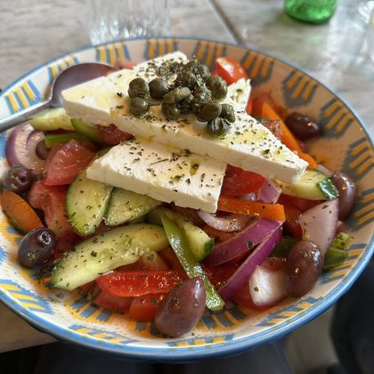
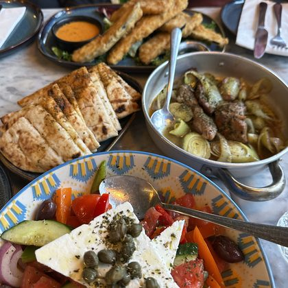
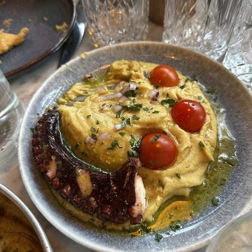

Saturday
·
5 meals
10 October
Taverna Meltemi, Naxos
Edit day
Add
Year
Month
Week
Day
Lunch
1:40 pm

Greek salad
Taverna Meltemi
★★★☆☆
Courgette fritters
Taverna Meltemi
★★★★☆
Dinner
8:15 pm

The whole table
Taverna Meltemi
★★★★★
Ordered everything. No regrets.
Pork & leeks
Taverna Meltemi
★★★★☆
Lemony and soft

Fava & octopus
Taverna Meltemi
★★★★★
Smoky octopus on creamy fava
Calendar
Timeline
Map
Rediscover
Plated